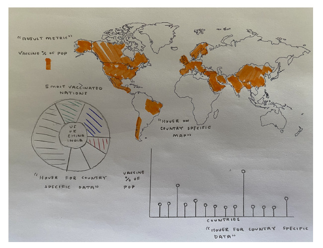
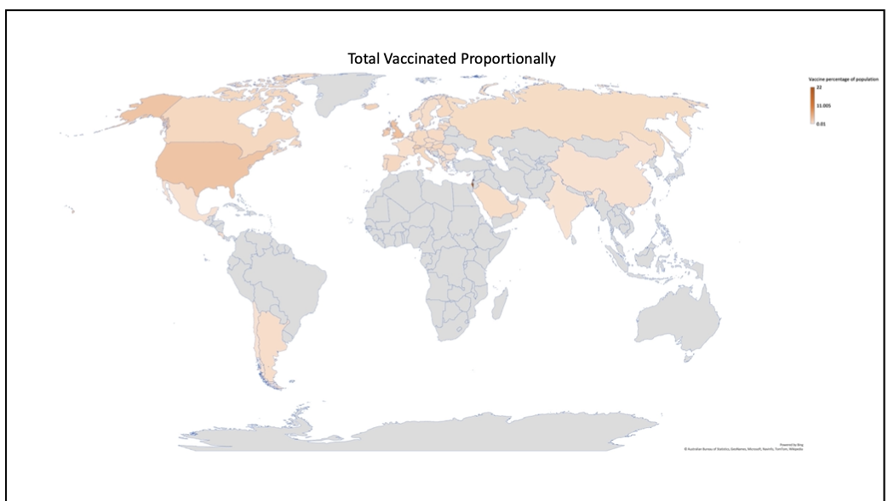
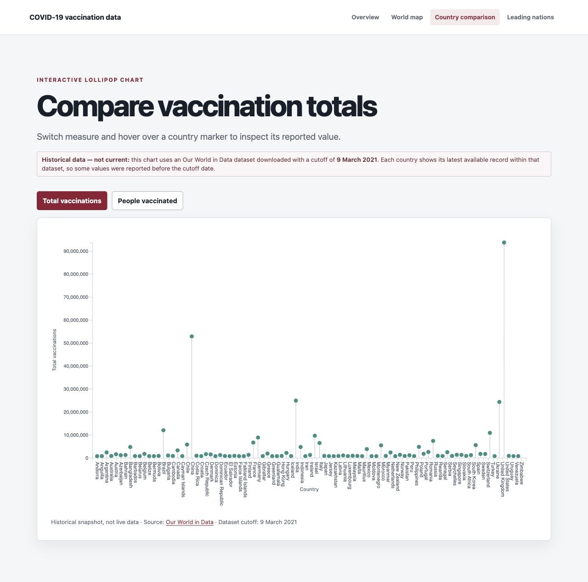
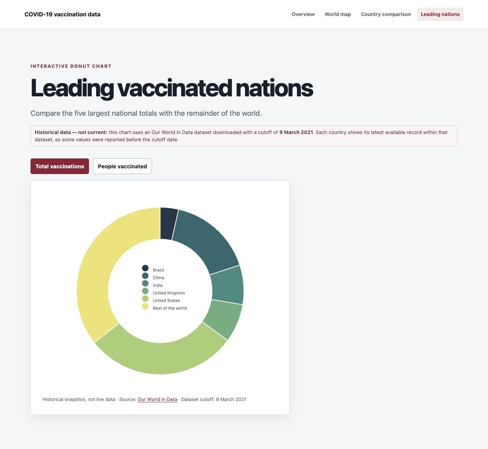

COVID-19 Vaccination Visualisation

COVID-19 Vaccination Visualisation was a 2021 project for the Simulation and Data Visualisation module in King's College London's Department of Informatics. It asked how the early vaccine rollout differed between nations, using a choropleth, lollipop chart and donut chart to move from a global overview to direct country comparisons.
Designing the views
The coursework began with four directions: a bubble map of infections over time, an HDI and deaths scatterplot, a vaccination choropleth and an HDI-ordered Sankey diagram. Sketches and low-fidelity tests helped narrow the final build to the vaccination question, with linked views for geography, ranking and share of the worldwide total.


Building the dashboard
The browser views were built with HTML, CSS, JavaScript, D3.js and TopoJSON. A Java and JSON.simple pipeline parsed an Our World in Data snapshot, extracted country and worldwide totals, and calculated the proportional measures used by the map.
The live application
The finished application pairs the world map with two closer comparisons. The lollipop chart exposes each country's reported total, while the donut chart places the five leading nations against the rest of the world. Both can switch between total vaccinations and people vaccinated.


Historical data: the visualisations use records available through 9 March 2021. Each country shows its latest report within that archived dataset, so some national reporting dates are earlier. The project is presented as a record of the 2021 coursework—not as a current public-health dashboard.